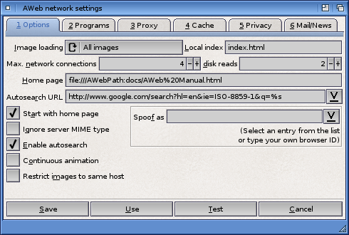

Network settings: Options

This chooser lets you select if you want AWeb to load images:
| All images | AWeb will start loading every image as soon as it is encountered in a page. This could consume a lot of bandwidth, especially if you are using a slow connection. |
|---|
| Maps only | This option doesn't load all images, but only clickable maps. This can save a lot of traffic, and still lets you use clickable maps, as these are often essential navigation tools.
|
|---|
| Off | AWeb will never load images automatically. If you want to see an image, you have to click on its icon. |
|---|
If the name of a local file requested ends in a slash (/), this name is appended to the file name. This allows setting up your own WWW pages locally without having to change the names.
AWeb is capable of handling an unlimited number of parallel network connections. You might want to limit this number to a reasonable maximum, to avoid overloading your network line.
The status of all connections can be viewed in the network status window.
Although you may have set the number of network connections to a reasonable maximum, it could cause disk trashing when you try to load local files.
Disk trashing is the phenomena you may encounter when two or more files from the same device are read simultaneously. Most of the time the disk is busy moving its read heads to and fro, causing the speed of data transfer to drop dramatically.
To avoid this, you can limit the number of local disk reads independently.
This is the URL of your home page as far as AWeb is concerned. It doesn't need to be the same as your home page on the WWW. It is merely the page that will be shown if you select "Navigate->Home document" from the menu, or click the Home button.
Enter the URL of the search engine you want to use for autosearch here. You should use the form of the URL sent by the search entry form. Use %s as a placeholder for the search argument.
Start with homepage
If this checkbox is checked, AWeb will retrieve the page defined as your home page immediately when you start the program. If this option is not checked, you will initially get an empty window.
As explained in the external viewers section, most servers send the MIME type along with the data. Unfortunately, some servers send the wrong MIME type if they fail to recognize the true type of the data. This may lead to a file being saved instead of passed to an external viewer as expected.
In those cases, it is best to ignore the MIME type as reported by the server, and let AWeb identify the MIME type by the file name extension.
If this checkbox is selected, the MIME type as reported by the server is ignored.
If you check this checkbox, autosearch is enabled.
Controls the way the background status indicator (or transfer animation) works. By default, this indicator is moved one step ahead at each bit of network activity. If you enable continuous animation, the animation plays at constant speed as long as transfers are going on.
If you check this checkbox, images that originate from a different host than the document in which they appear, will not be loaded automatically. Use this to prevent many banners to be loaded and displayed.
With this option unchecked, all images will be loaded automatically regardless of their origin (provided the Image loading setting allows image loading in the first place).
This field enables you to change the browser ID that is used to identify the browser with the server. Some servers use this information to return different versions of a document. The drop down list contains a few suggested IDs, but you can type any ID you like.
Leave the field empty (choose "(AWeb)" from the drop down list) to use the original AWeb ID.
 Mail/News
Mail/News  Settings requesters
Settings requesters  Programs
Programs